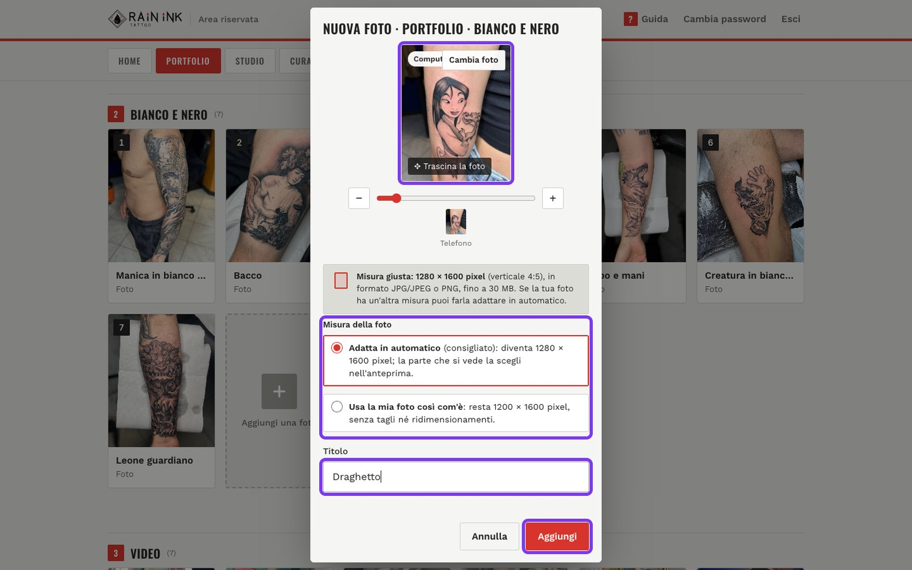
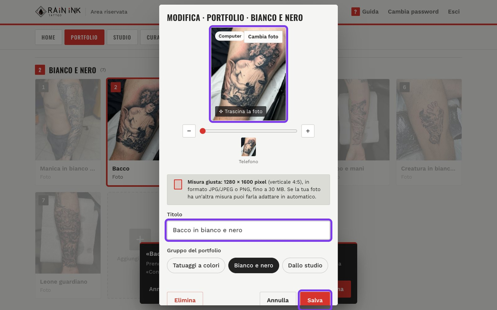
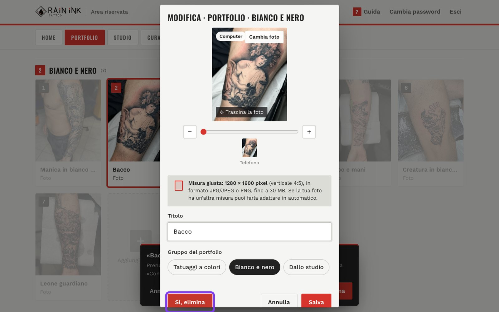
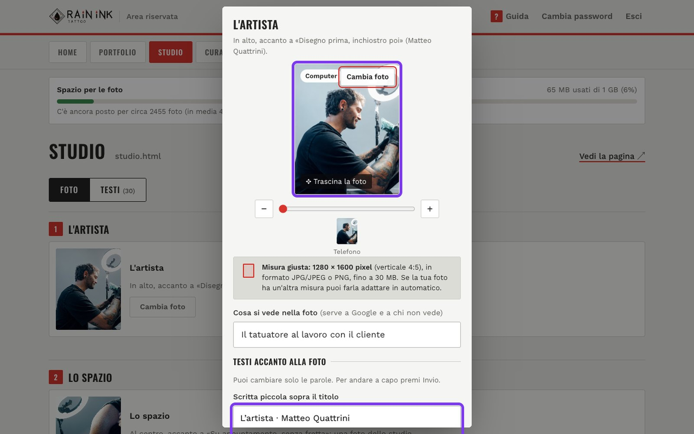

Aggiungere una foto
1In alto scegli la pagina del sito da modificare, per esempio Portfolio.

2Clicca la casella grigia con il +, in fondo alle foto (nel Portfolio, in fondo al gruppo giusto: Tatuaggi a colori, Bianco e nero, Video o Dallo studio). Si apre la finestra per scegliere il file: scegli la foto e clicca Apri.

3L'anteprima è la foto esattamente come sul sito (quella grande è il computer, sotto la piccola è il telefono). Trascina la foto in qualsiasi direzione e, se vuoi, ingrandiscila con la barra sotto (o con due dita, o con la rotella del mouse) per scegliere la parte che si vede: si salva così. Poi scrivi il titolo e clicca Aggiungi. Se hai sbagliato foto, clicca Cambia foto.

4La foto nuova lampeggia in rosso. Se vuoi spostarla, tieni premuto il clic sulla foto e trascinala nel posto che preferisci; altrimenti resta ultima. Poi clicca Conferma e salva nella barra in basso.

5Si apre la finestra del salvataggio: aspetta che la barra arrivi in fondo e clicca OK. Il sito si aggiorna da solo entro qualche minuto.

Riordinare le foto
1Clicca la foto da spostare: si accende in rosso e le altre diventano più chiare.

2Tieni premuto il clic sulla foto e trascinala dove vuoi, dentro lo stesso blocco. Il numero in alto a sinistra indica il posto. Poi clicca Conferma.

Hai cambiato idea? Clicca Annulla e la foto torna dov'era, senza salvare nulla. Finché non scegli Conferma o Annulla il resto della pagina è bloccato: se clicchi altrove, la barra in basso lampeggia per ricordartelo.
Modificare una foto (titolo, gruppo o foto)
1Clicca la foto, poi clicca Modifica o elimina nella barra in basso.

2Correggi il titolo e clicca Salva. Nel Portfolio da qui puoi anche spostare la foto in un altro gruppo. Puoi anche trascinare e ingrandire la foto nell'anteprima per cambiare la parte che si vede, oppure metterne un'altra con Cambia foto.

Eliminare una foto
1Clicca la foto, poi clicca Modifica o elimina nella barra in basso (come per modificarla).
2Clicca Elimina in basso a sinistra nella finestra. Il pulsante diventa rosso con scritto Sì, elimina: cliccalo di nuovo per confermare.

L'eliminazione è definitiva: la foto sparisce dal sito. Se non clicchi «Sì, elimina» non succede nulla.
Cambiare le foto fisse
1Nella Home (la foto grande della prima schermata) e nella pagina Studio (L'artista e Lo spazio) ci sono foto con un posto fisso: clicca Cambia foto accanto a quella da cambiare.

2Nella finestra vedi la foto come sul sito (computer e telefono): puoi trascinarla e ingrandirla per cambiare la parte che si vede, oppure clicca Cambia foto e scegli quella nuova. Scrivi in breve cosa si vede (serve a Google). Più sotto, in Testi accanto alla foto, puoi cambiare anche i testi che stanno vicino a quella foto nella pagina (titolo, descrizione…). Poi clicca Salva.

Ogni pagina è indipendente: una foto cambiata in una pagina resta uguale in tutte le altre.
Modificare un testo
1Nella pagina clicca Testi (accanto a Foto). I testi sono divisi per sezione, nell'ordine in cui si vedono sul sito: clicca quello da cambiare.

2Scrivi il testo nuovo (per andare a capo premi Invio). Si cambiano solo le parole: se nel testo ci sono parti in grassetto o cliccabili, ognuna ha il suo campo e resta com'è. Sotto vedi, mentre scrivi, come si vedrà sul sito: a sinistra sul computer, a destra sul telefono, con il testo contornato di rosso al suo posto nella pagina; poi clicca Salva.

Quasi ogni testo è uno solo e si vede uguale su computer, tablet e telefono (cambia solo come è impaginato): nella scheda c'è scritto dove si vede. «Scorri verso il basso», nella prima schermata della Home, si vede solo su computer e tablet.
Pulsanti e testi cliccabili
1Nei pulsanti e nei testi cliccabili cambi le parole; sotto vedi anche Dove porta il clic, che invece resta com'è.

Cosa non si cambia
Alcuni testi hanno accanto parti fisse (frecce, icone, i campi del modulo contatti): lì si cambia solo il testo, su una riga. La scritta «Rain Ink» al neon, il menu in alto, il piè di pagina e i titoli dei lavori (quelli si cambiano dalle Foto) non si cambiano da qui: per quelli chiedi a chi cura il sito.